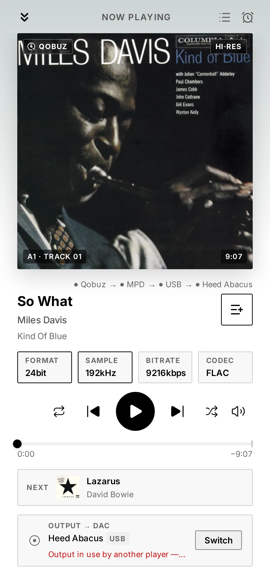

“Device or resource busy”: two players, one DAC
Short answer: a player that opens a DAC directly has it to itself until it lets go. Any other player that tries in the meantime gets "Device or resource busy" and plays nothing. That exclusivity is what lets a player send your music untouched, so the fix is not to share the DAC: it is to find which program holds it, and to have your players take turns.
What it looks like
The words vary with the program; the cause does not. Two of them:
aplay: main:850: audio open error: Device or resource busy
Failed to open ALSA device "hw:0,0": Device or resource busy
The first is what aplay, ALSA's own player, printed on my test box when another program held
the DAC (2026-10-17). The second is MPD's.
Find who holds the DAC
On the streamer, list the sound cards, then read the state of yours (card0 here; use your DAC's
number):
cat /proc/asound/cards
cat /proc/asound/card0/pcm0p/sub0/status
closed means nobody holds it. Otherwise the first lines say who does:
state: RUNNING
owner_pid : 1603814
That number is a process. Its name, and the service it belongs to:
cat /proc/1603814/comm
cat /proc/1603814/cgroup
For a player started as a service, the second answer ends with the service's name, such as
/system.slice/mpd.service.
When each player lets go
Players do not all release the DAC at the same moment. Measured on my test boxes:
- MPD 0.24.5 holds it while it plays and releases it less than a second after a pause or a
stop (2026-10-17). Its
always_onoption changes that: the output is then paused instead of closed, and the DAC stays taken. - HQPlayer's NAA takes it only while HQPlayer plays to it, and releases it within three seconds of a stop (2026-09-26).
- HQPlayer Embedded, without a licence, stops taking commands after half an hour but keeps running, and keeps the DAC (2026-09-22).
The fixes
- One player at a time. Stop the one that holds the DAC, or stop running the players you do not use.
- One output each. A box with several outputs, a USB DAC and HDMI for instance, can give each player its own.
- Not a mixer, on a hi-fi DAC. ALSA's
dmix, or a sound server such as PipeWire, lets several programs play at once, and the error goes away. But mixing brings every stream to one format:dmixruns at a single rate, 48 kHz unless you set another, so a 44.1 kHz or 96 kHz file is resampled on the way. Fine on a desktop; not what a streamer is for.
With Audiogravity
- Profiles decide which players run. Each profile is named after what it starts: MPD, Roon Bridge + MPD, MPD + HQPlayer NAA, HQPlayer Embedded… Those that run two players say so in their description: Roon or MPD directly — one at a time.
- A busy DAC is named, not silent. When MPD cannot open the DAC because another player holds it, the player says Output in use by another player — stop it to play here.
- No collision with HQPlayer. With HQPlayer as the output, your music goes to HQPlayer rather than to MPD while the NAA holds the DAC; turning Use as output off releases the card for local playback at once.
- The signal path shows who is playing. The Pipeline tab (Pro) credits the link into the DAC to the service that holds the card, found the same way as above, from the process to its service.

The details are in the manual: Troubleshooting → No sound / wrong output, and Administration → Audio configuration.